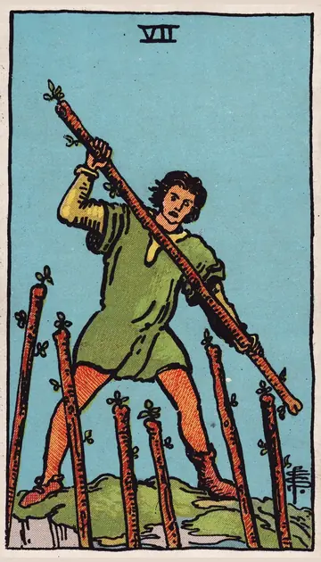

正位置ワンドの7の正位置
キーワード：守り抜く・粘り・信念
恋愛
周りの声に負けず、自分の想いを大切にする時です。
相手の気持ちあなたとの関係を、大切に守りたいと感じているようです。
この先想いを貫くことで、関係が確かなものになりそうです。
アドバイス自分の気持ちに、自信を持ちましょう。
気をつけること守りに入りすぎて、相手を敵のように扱わないように。
この先想いを貫くことで、関係が確かなものになりそうです。
アドバイス自分の気持ちに、自信を持ちましょう。
気をつけること守りに入りすぎて、相手を敵のように扱わないように。
人間関係
自分の立場を、しっかり守る必要がある時です。
相手の気持ちあなたの芯の強さを、頼もしく感じているようです。
この先信頼できる味方が現れそうです。
アドバイス言うべきことは、はっきり伝えましょう。
気をつけること意地を張りすぎないように。
この先信頼できる味方が現れそうです。
アドバイス言うべきことは、はっきり伝えましょう。
気をつけること意地を張りすぎないように。
仕事・学業
批判や競争の中でも、踏ん張ることで道が開ける時期です。
この先粘り強さが実り、立場が安定しそうです。
アドバイス自分の考えを、根拠とともに示しましょう。
気をつけること一人で全部を抱え込まないように。
アドバイス自分の考えを、根拠とともに示しましょう。
気をつけること一人で全部を抱え込まないように。
お金
お金を守る意識が、大切な時です。
この先しっかり守った分、お金が残りそうです。
アドバイス必要のない出費は、きっぱり断りましょう。
気をつけること守りに入りすぎて、必要な出費まで削らないように。
アドバイス必要のない出費は、きっぱり断りましょう。
気をつけること守りに入りすぎて、必要な出費まで削らないように。
生活
自分の暮らしのペースを、守る時です。
この先自分らしい暮らしを保てそうです。
アドバイス譲れない習慣は、しっかり守りましょう。
気をつけること意地を張って、休みを削らないように。
アドバイス譲れない習慣は、しっかり守りましょう。
気をつけること意地を張って、休みを削らないように。
今日の運勢
譲れないことを、守り通せる日です。
この先踏ん張った分だけ、手応えがありそうです。
アドバイス大切なことには、きっぱりと向き合いましょう。
気をつけること気を張りすぎて、疲れないように。
アドバイス大切なことには、きっぱりと向き合いましょう。
気をつけること気を張りすぎて、疲れないように。
逆位置ワンドの7の逆位置
キーワード：押され気味・自信のゆらぎ・疲れ
恋愛
周りの意見に押され、自信が揺らぎやすい時です。
相手の気持ちあなたとの関係で、周りの目を気にしているようです。
この先気持ちが落ち着けば、また自信を取り戻せそうです。
アドバイス全部に応えようとせず、大切なことを一つ選びましょう。
気をつけること周りに合わせて、自分の気持ちを見失わないように。
この先気持ちが落ち着けば、また自信を取り戻せそうです。
アドバイス全部に応えようとせず、大切なことを一つ選びましょう。
気をつけること周りに合わせて、自分の気持ちを見失わないように。
人間関係
板ばさみになって、疲れやすい時です。
相手の気持ちあなたに対して、少し気を張っているようです。
この先味方がいることに、気づけそうです。
アドバイス信頼できる人に、味方になってもらいましょう。
気をつけること八つ当たりしないように。
この先味方がいることに、気づけそうです。
アドバイス信頼できる人に、味方になってもらいましょう。
気をつけること八つ当たりしないように。
仕事・学業
プレッシャーに押されやすい時期です。
この先体勢を立て直せば、押し返せそうです。
アドバイス無理な戦いからは、一度引いてみましょう。
気をつけること疲れを隠して、無理を重ねないように。
アドバイス無理な戦いからは、一度引いてみましょう。
気をつけること疲れを隠して、無理を重ねないように。
お金
お金の頼みごとを、断りにくい時です。
この先線を引けば、楽になりそうです。
アドバイスお金の頼みには、はっきり答えましょう。
気をつけること流されて、お金を出さないように。
アドバイスお金の頼みには、はっきり答えましょう。
気をつけること流されて、お金を出さないように。
生活
周りに合わせて、疲れやすい時です。
この先休めば、元気が戻りそうです。
アドバイス自分のための時間を、確保しましょう。
気をつけること頼まれごとを、全部引き受けないように。
アドバイス自分のための時間を、確保しましょう。
気をつけること頼まれごとを、全部引き受けないように。
今日の運勢
気持ちが守りに入りやすい日です。
この先休めば、元気が戻ってきそうです。
アドバイス休むことも、立派な選択です。
気をつけること弱気になって、投げやりにならないように。
アドバイス休むことも、立派な選択です。
気をつけること弱気になって、投げやりにならないように。
このページの文章は、アプリ「ひとやすみタロット」の結果に使っている文章です。アプリでは、あなたの相談や、カードが出た位置（今の状況・これからの流れ・アドバイス）に合わせて、この中から文章を選びます。逆位置の読み方は逆位置のことをご覧ください。
「ワンドの7」が出たら、あなたの相談ではどう読む？
アプリでは、質問への答えに合わせて、カードの言葉をあなたの相談に合わせて届けます。
Android 対応・会員登録なし